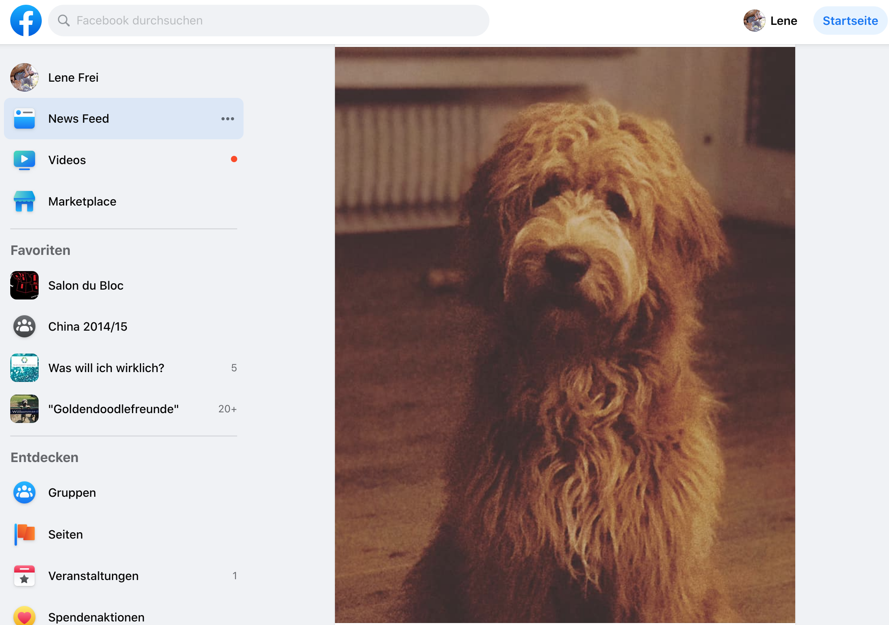
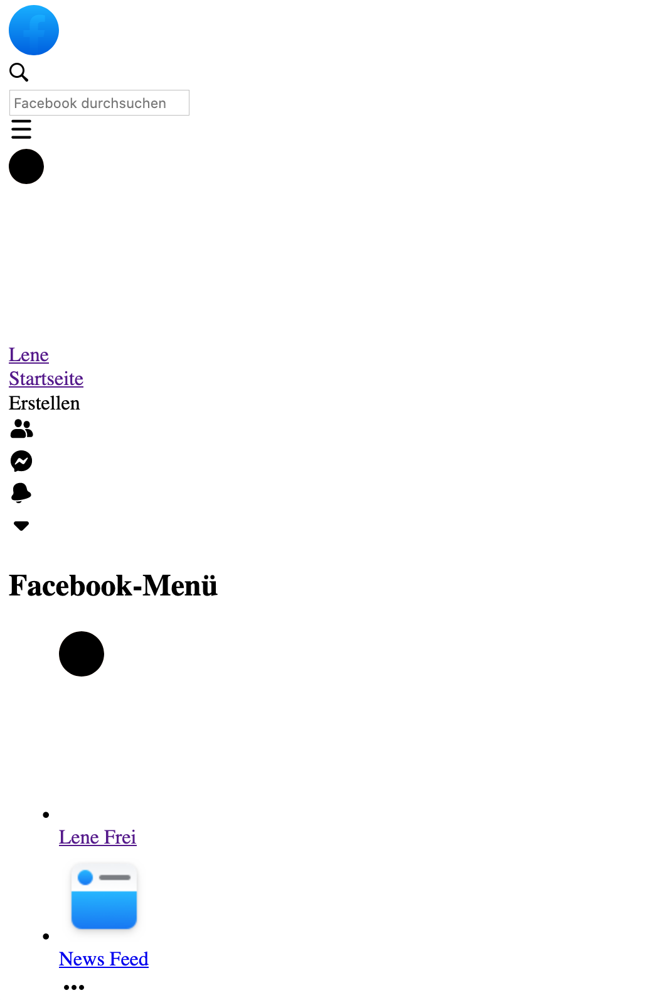

Introduction to CSS Layouts with Flexbox and Grid
A workshop by Lene Frei
Content and structure
- Personal introduction
- Summary HTML and CSS
- Overview CSS Grid and Flexbox
- Exercises
Who am I?
- Name: Lene
- Work: Coach at Neue Fische Bootcamp
- Coding since: June 2019 #codenewbie
- Interests: Coding, Climbing, Yoga
Summary HTML and CSS
-
HTML: most basic building block of the web, defines meaning and structure of web content
-
Includes elements such as:
- No styling
Website with styling:

Website without styling:

Summary HTML and CSS 2
-
CSS: Cascading Stylesheets, to style and layout html
-
CSS selectors type, class and id
Summary HTML and CSS 3
-
Attribute selectors
-
Pseudo-classes and pseudo-elements
-
Combinators
More about selectors here
Let's get started!
CSS Grid and Flexbox
Questions you should be able to answer after the workshop!
- What are CSS Grid and Flexbox?
- What is the difference between the two?
- Why should you learn them?
Start with the why...
Why should you even learn CSS Grid and Flexbox?
- Content of any webpage needs layout
- Responsivness
- Powerful and easy tools
But what are they?
CSS grid
CSS Grid layouts are fundamental to the design of websites[...]. Grid Layout gives us a method of creating grid structures that is described in CSS.
CSS Flexbox
The Flex Box module aims at providing a more efficient way to lay out, align and distribute space among items in a container[...].
Click here to get to the source.
Main difference
The main difference between CSS Grid Layout and CSS Flexbox Layout is that flexbox was designed for layout in one dimension either a row or a column, on the other hand, Grid was designed for two-dimensional layout rows, and columns at the same time.
Flexbox layout is most appropriate to the components of an application, and small-scale layouts, while the Grid layout is intended for larger scale layouts.
Click here to get to the source.
But..
... sometimes you can also use Grid for components and Flexbox for a more general layout! It always depends on what you would like to do!
CSS Grid
- Create a new Codepen (codepen.io)
- Create a div with the class "container"
- Within this container create 10 more divs with the class "item" (emmet: div.item{$}*10 )
- Codepen
-
background-color: lightblue;
border: 2px solid rgba(0, 0, 0, 0.1);
border-radius: 3px;
font-size: 35px;
- emmet: div.item.item${$}*10
Important notes for Grid
- Using Firefox Developer Edition
- Direct children of grid are called "grid items"
- Explicit and implicit columns and rows
- fr unit
- Repeat function
- span, placing, alignment, centering
Let's Practice!
With codepen:
- For excercise pen click here!
- For result pen click here!
With a game:
More sources to learn grid!
Flexbox notes
- important feature: flex-direction, default row
- main axis default left to right, cross axis from top to bottom
- change direction to column; main axis from top to bottom
- flex-shrink on flex-items handy feature
Let's try it!
With codepen:
- For excercise pen click here!
- For result pen click here!
With a game:
More sources to learn flexbox!
Last exercise!
Solving Problems With CSS Grid and Flexbox: The Card UI
- For excercise pen click here!
- For result pen click here!
All credit goes to Ian Yates by Envato Tuts+. Click here to get to the whole tutorial.
Wrap up!
Any more questions?
Any feedback?
Thank you for your attention! ☺️